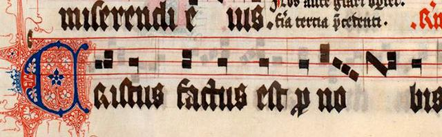

Our Choral Director
Daniel Adams
Daniel joined the Society in 2017. He was born in 1988. Before joining us, he helped found the Blackburn Foodbank Community choir and the Hornby Singers near Lancaster, as well as holding the role of Assistant Music Director with Blackburn People’s Choir. He has also been music director with the Choir of the Clitheroe Grand Theatre.
Daniel achieved a first class honours degree and a Masters in Film Studies. Skilled in music performance, he specialises in choral conducting and solo singing, as well as theatre and filmmaking. Daniel also edits a quarterly magazine for the British Light Music Society focusing on music criticism and history.